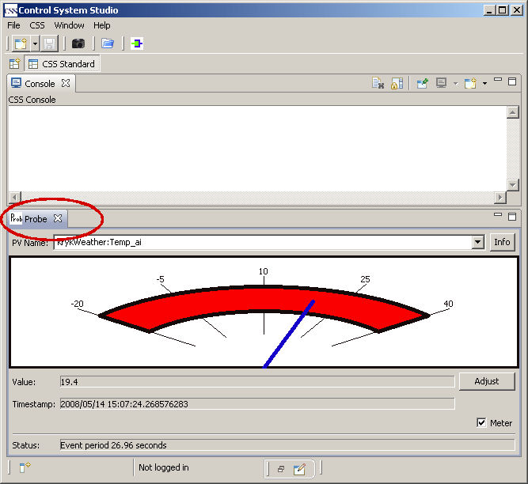
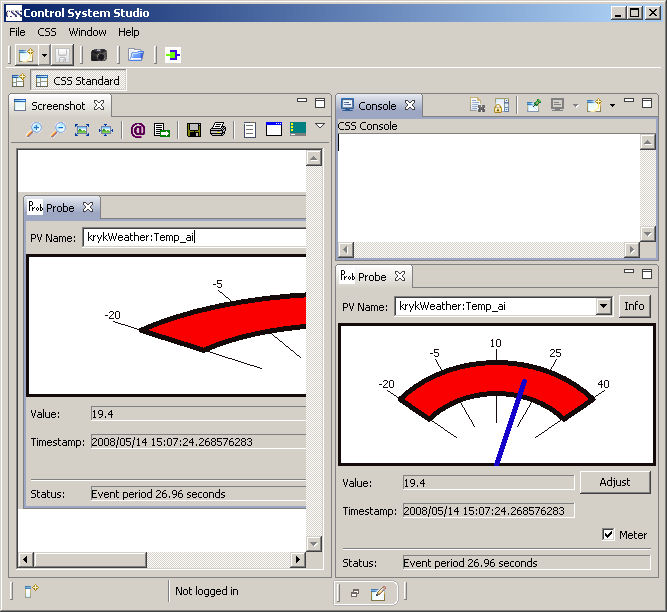
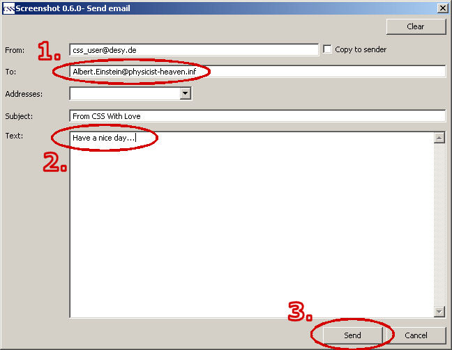
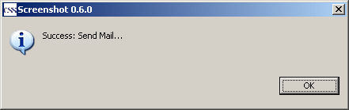

CSS Screenshot
First Steps
This document describes how to start the plugin to capture an image and to send this image via email(using Probe as an example).
IMPORTANT:
The configuration for the mail server have to be valid. See Preferences for more information.
1. Select the view
Only a view that has got the focus will be captured by the plugin and will be shown.

2. Start the plugin
The screenshot plugin is started by clicking on the toolbar button.

It's also possible to use the CSS menu entry.

3. Showing the captured image
The plugin starts and creates internal up to three images:
- Current(active) view
- CSS window
- The entire screen
The user can select one of the captured images. When the plugin is active, it will first show the captured view. If no view was active
at starting time, the plugin shows the CSS window.

In our example the view of probe is shown accurately.
If the image is to big to fit into the screenshot view, scroll bars will be displayed to scroll the image.
4. Sending the image via email
The screenshot plugin provides its own toolbar. Click on the 'send mail' button to send the image as an attachment of an email.

The mail dialog will be opened.

Fill in the email address and the mail text and click on the button Send. You will get an response message.
